task = tsk("spam")
learner = lrn("classif.sleep",
sleep_train = model_time / 2,
sleep_predict = model_time / 2)
fselect(
fselector = fs("random_search", batch_size = 1000),
task = task,
learner = learner,
resampling = rsmp("holdout"),
measure = msr("classif.ce"),
terminator = trm("evals", n_evals = 1000),
store_benchmark_result = FALSE,
store_models = FALSE
)Scope
This report analyzes the runtime and memory usage of the mlr3fselect package across different versions. The benchmarks include the fselect() and fselect_nested() functions both in sequential and parallel mode. The benchmarks vary the training time of the models and the size of the dataset.
Given the extensive package ecosystem of mlr3, performance bottlenecks can occur at multiple stages. This report aims to help users determine whether the runtime of their workflows falls within expected ranges. If significant runtime or memory anomalies are observed, users are encouraged to report them by opening a GitHub issue.
Benchmarks are conducted on a high-performance cluster optimized for multi-core performance rather than single-core speed. Consequently, runtimes may be faster on a local machine.
Summary of Latest mlr3fselect Version
The benchmarks are comprehensive; therefore, we present a summary of the results for the latest mlr3fselect version. We measure the runtime and memory usage of a random search with 1000 resampling iterations on the spam dataset with 1000 and 10,000 instances. The nested resampling is conducted with 10 outer resampling iterations and uses the same random search for the inner resampling loop. The overhead introduced by fselect() and fselect_nested() should always be considered relative to the training time of the models. For models with longer training times, such as 1 second, the overhead is minimal. For models with a training time of 100 ms, the overhead is approximately 20%. For models with a training time of 10 ms, the overhead approximately doubles or triples the runtime. In cases where the training time is only 1 ms, the overhead results in the runtime being 16 to 20 times larger than the actual model training time. The memory usage of fselect() and fselect_nested() is between 450 MB and 550 MB. Running an empty R session consumes 131 MB of memory.
mlr3fselect utilizes the future package to enable parallelization over resampling iterations. However, running fselect() and fselect_nested() in parallel introduces overhead due to the initiation of worker processes. Therefore, we compare the runtime of parallel execution with that of sequential execution. For models with a 1-second, 100 ms, and 10 ms training time, using fselect() in parallel reduces runtime. For models 1 ms training times, sequential execution becomes slower than parallel execution. Memory usage increases significantly with the number of cores since each core initiates a separate R session. Utilizing 10 cores results in a total memory usage of around 1.8 GB. The fselect_nested() functions parallelize over the outer resampling loop. For all training times, the parallel version is faster than the sequential version. The memory usage is around 3.3 GB.
Feature Selection
The runtime and memory usage of the fselect() function is measured for different mlr3fselect versions. A random search is used with a batch size of 1000. The models are trained for different amounts of time (1 ms, 10 ms, 100 ms, and 1000 ms) on the spam dataset with 1000 and 10,000 instances.
Model Time 1000 ms
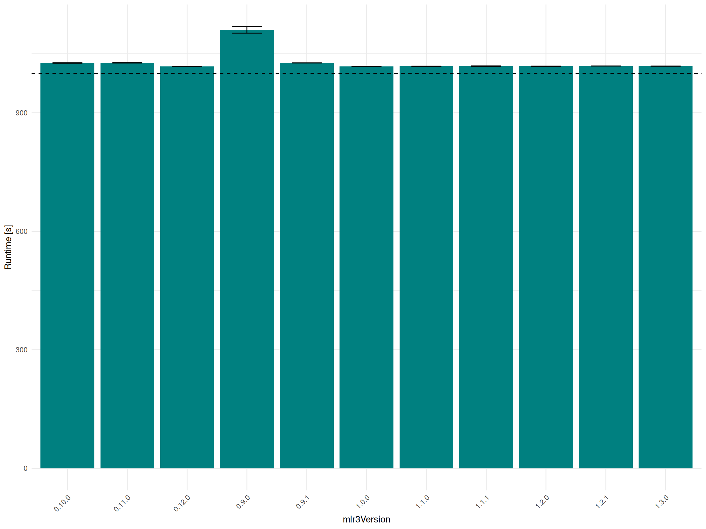
fselect() with models trained for 1000 ms depending on the mlr3fselect version. The dashed line indicates the total training time of the models. Error bars represent the median absolute deviation of the runtime.| mlr3fselect Version | bbotk Version | mlr3 Version | paradox Version | Model Time [ms] | Total Model Time [s] | Median Runtime [s] | Median Runtime 10,000 [s] | K | Median Memory [MB] | Median Memory 10,000 [s] |
|---|---|---|---|---|---|---|---|---|---|---|
| 0.10.0 | 0.7.2 | 0.14.1 | 0.11.0 | 1000 | 1000 | 1,000 | 1,000 | 1.0 | 540 | 543 |
| 0.11.0 | 0.7.2 | 0.14.1 | 0.11.0 | 1000 | 1000 | 1,000 | 1,000 | 1.0 | 540 | 543 |
| 0.12.0 | 0.8.0 | 0.19.0 | 0.11.1 | 1000 | 1000 | 1,000 | 1,000 | 1.0 | 440 | 512 |
| 0.9.0 | 0.7.2 | 0.14.1 | 0.11.0 | 1000 | 1000 | 1,100 | 1,100 | 1.1 | 966 | 1,016 |
| 0.9.1 | 0.7.2 | 0.14.1 | 0.11.0 | 1000 | 1000 | 1,000 | 1,000 | 1.0 | 547 | 515 |
| 1.0.0 | 1.0.0 | 0.20.0 | 1.0.1 | 1000 | 1000 | 1,000 | 1,000 | 1.0 | 510 | 422 |
| 1.1.0 | 1.1.0 | 0.20.2 | 1.0.1 | 1000 | 1000 | 1,000 | 1,000 | 1.0 | 442 | 439 |
| 1.1.1 | 1.1.1 | 0.21.0 | 1.0.1 | 1000 | 1000 | 1,000 | 1,000 | 1.0 | 444 | 432 |
| 1.2.0 | 1.2.0 | 0.21.1 | 1.0.1 | 1000 | 1000 | 1,000 | 1,000 | 1.0 | 520 | 545 |
| 1.2.1 | 1.3.0 | 0.21.1 | 1.0.1 | 1000 | 1000 | 1,000 | 1,000 | 1.0 | 521 | 545 |
| 1.3.0 | 1.5.0 | 0.21.1 | 1.0.1 | 1000 | 1000 | 1,000 | 1,000 | 1.0 | 446 | 538 |
Model Time 100 ms
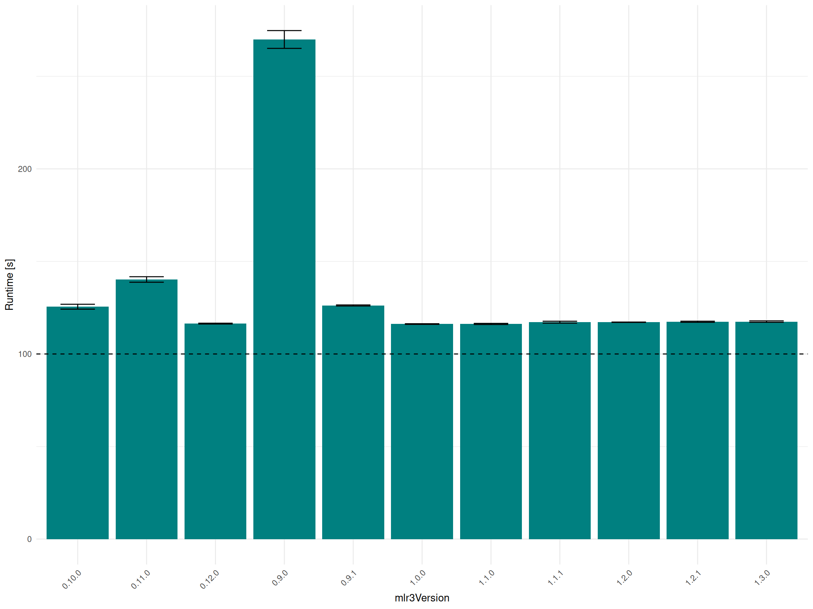
fselect() with models trained for 100 ms depending on the mlr3fselect version. The dashed line indicates the total training time of the models. Error bars represent the median absolute deviation of the runtime.| mlr3fselect Version | bbotk Version | mlr3 Version | paradox Version | Model Time [ms] | Total Model Time [s] | Median Runtime [s] | Median Runtime 10,000 [s] | K | Median Memory [MB] | Median Memory 10,000 [s] |
|---|---|---|---|---|---|---|---|---|---|---|
| 0.10.0 | 0.7.2 | 0.14.1 | 0.11.0 | 100 | 100 | 130 | 130 | 1.3 | 540 | 543 |
| 0.11.0 | 0.7.2 | 0.14.1 | 0.11.0 | 100 | 100 | 140 | 130 | 1.4 | 540 | 543 |
| 0.12.0 | 0.8.0 | 0.19.0 | 0.11.1 | 100 | 100 | 120 | 120 | 1.2 | 440 | 512 |
| 0.9.0 | 0.7.2 | 0.14.1 | 0.11.0 | 100 | 100 | 270 | 270 | 2.7 | 966 | 1,016 |
| 0.9.1 | 0.7.2 | 0.14.1 | 0.11.0 | 100 | 100 | 130 | 130 | 1.3 | 547 | 515 |
| 1.0.0 | 1.0.0 | 0.20.0 | 1.0.1 | 100 | 100 | 120 | 120 | 1.2 | 510 | 422 |
| 1.1.0 | 1.1.0 | 0.20.2 | 1.0.1 | 100 | 100 | 120 | 120 | 1.2 | 442 | 439 |
| 1.1.1 | 1.1.1 | 0.21.0 | 1.0.1 | 100 | 100 | 120 | 120 | 1.2 | 444 | 432 |
| 1.2.0 | 1.2.0 | 0.21.1 | 1.0.1 | 100 | 100 | 120 | 120 | 1.2 | 520 | 545 |
| 1.2.1 | 1.3.0 | 0.21.1 | 1.0.1 | 100 | 100 | 120 | 120 | 1.2 | 521 | 545 |
| 1.3.0 | 1.5.0 | 0.21.1 | 1.0.1 | 100 | 100 | 120 | 120 | 1.2 | 446 | 538 |
Model Time 10 ms
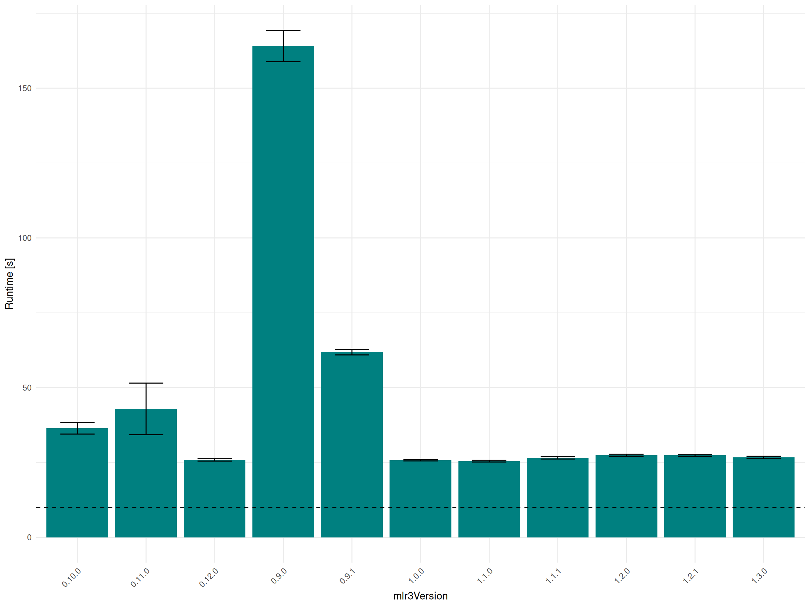
fselect() with models trained for 10 ms depending on the mlr3fselect version. The dashed line indicates the total training time of the models. Error bars represent the median absolute deviation of the runtime.| mlr3fselect Version | bbotk Version | mlr3 Version | paradox Version | Model Time [ms] | Total Model Time [s] | Median Runtime [s] | Median Runtime 10,000 [s] | K | Median Memory [MB] | Median Memory 10,000 [s] |
|---|---|---|---|---|---|---|---|---|---|---|
| 0.10.0 | 0.7.2 | 0.14.1 | 0.11.0 | 10 | 10 | 36 | 47 | 3.6 | 540 | 543 |
| 0.11.0 | 0.7.2 | 0.14.1 | 0.11.0 | 10 | 10 | 43 | 38 | 4.3 | 540 | 543 |
| 0.12.0 | 0.8.0 | 0.19.0 | 0.11.1 | 10 | 10 | 26 | 27 | 2.6 | 440 | 512 |
| 0.9.0 | 0.7.2 | 0.14.1 | 0.11.0 | 10 | 10 | 160 | 120 | 16 | 966 | 1,016 |
| 0.9.1 | 0.7.2 | 0.14.1 | 0.11.0 | 10 | 10 | 62 | 40 | 6.2 | 547 | 515 |
| 1.0.0 | 1.0.0 | 0.20.0 | 1.0.1 | 10 | 10 | 26 | 27 | 2.6 | 510 | 422 |
| 1.1.0 | 1.1.0 | 0.20.2 | 1.0.1 | 10 | 10 | 25 | 27 | 2.5 | 442 | 439 |
| 1.1.1 | 1.1.1 | 0.21.0 | 1.0.1 | 10 | 10 | 27 | 28 | 2.7 | 444 | 432 |
| 1.2.0 | 1.2.0 | 0.21.1 | 1.0.1 | 10 | 10 | 27 | 28 | 2.7 | 520 | 545 |
| 1.2.1 | 1.3.0 | 0.21.1 | 1.0.1 | 10 | 10 | 27 | 28 | 2.7 | 521 | 545 |
| 1.3.0 | 1.5.0 | 0.21.1 | 1.0.1 | 10 | 10 | 27 | 28 | 2.7 | 446 | 538 |
Model Time 1 ms
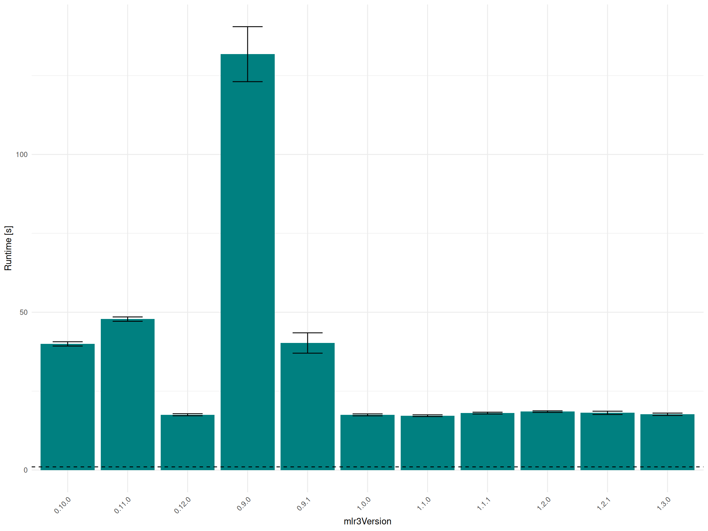
fselect() with models trained for 1 ms depending on the mlr3fselect version. The dashed line indicates the total training time of the models. Error bars represent the median absolute deviation of the runtime.| mlr3fselect Version | bbotk Version | mlr3 Version | paradox Version | Model Time [ms] | Total Model Time [s] | Median Runtime [s] | Median Runtime 10,000 [s] | K | Median Memory [MB] | Median Memory 10,000 [s] |
|---|---|---|---|---|---|---|---|---|---|---|
| 0.10.0 | 0.7.2 | 0.14.1 | 0.11.0 | 1 | 1 | 40 | 35 | 40 | 540 | 543 |
| 0.11.0 | 0.7.2 | 0.14.1 | 0.11.0 | 1 | 1 | 48 | 32 | 48 | 540 | 543 |
| 0.12.0 | 0.8.0 | 0.19.0 | 0.11.1 | 1 | 1 | 18 | 17 | 18 | 440 | 512 |
| 0.9.0 | 0.7.2 | 0.14.1 | 0.11.0 | 1 | 1 | 130 | 130 | 130 | 966 | 1,016 |
| 0.9.1 | 0.7.2 | 0.14.1 | 0.11.0 | 1 | 1 | 40 | 40 | 40 | 547 | 515 |
| 1.0.0 | 1.0.0 | 0.20.0 | 1.0.1 | 1 | 1 | 17 | 18 | 17 | 510 | 422 |
| 1.1.0 | 1.1.0 | 0.20.2 | 1.0.1 | 1 | 1 | 17 | 19 | 17 | 442 | 439 |
| 1.1.1 | 1.1.1 | 0.21.0 | 1.0.1 | 1 | 1 | 18 | 20 | 18 | 444 | 432 |
| 1.2.0 | 1.2.0 | 0.21.1 | 1.0.1 | 1 | 1 | 19 | 20 | 19 | 520 | 545 |
| 1.2.1 | 1.3.0 | 0.21.1 | 1.0.1 | 1 | 1 | 18 | 20 | 18 | 521 | 545 |
| 1.3.0 | 1.5.0 | 0.21.1 | 1.0.1 | 1 | 1 | 18 | 19 | 18 | 446 | 538 |
Memory
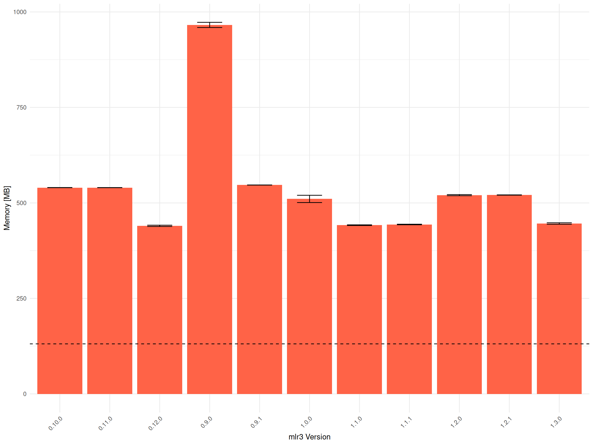
fselect() depending on the mlr3fselect version. Error bars represent the median absolute deviation of the memory usage. The dashed line indicates the memory usage of an empty R session which is 131 MB.Feature Selection in Parallel
The runtime and memory usage of the fselect() function is measured for different mlr3fselect versions. A random search is used with a batch size of 1000. The feature selection is conducted in parallel on 10 cores with future::multisession. The models are trained for different amounts of time (1 ms, 10 ms, 100 ms, and 1000 ms) on the spam dataset with 1000 and 10,000 instances.
task = tsk("spam")
learner = lrn("classif.sleep",
sleep_train = model_time / 2,
sleep_predict = model_time / 2)
future::plan("multisession", workers = 10)
fselect(
fselector = fs("random_search", batch_size = 1000),
task = task,
learner = learner,
resampling = rsmp("holdout"),
measure = msr("classif.ce"),
terminator = trm("evals", n_evals = 1000),
store_benchmark_result = FALSE,
store_models = FALSE
)Model Time 1000 ms
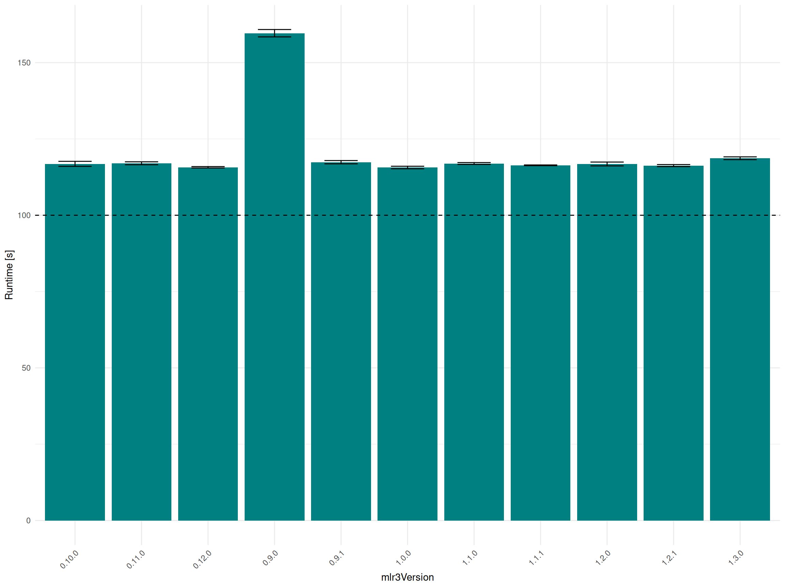
fselect() on 10 cores with models trained for 1000 ms depending on the mlr3fselect version. The dashed line indicates the total training time of the models divided by 10. Error bars represent the median absolute deviation of the runtime.| mlr3fselect Version | bbotk Version | mlr3 Version | paradox Version | Model Time [ms] | Total Model Time [s] | Median Runtime [s] | Median Runtime Sequential [s] | Median Runtime 10,000 [s] | K | Median Memory [MB] | Median Memory 10,000 [s] |
|---|---|---|---|---|---|---|---|---|---|---|---|
| 0.10.0 | 0.7.2 | 0.14.1 | 0.11.0 | 1000 | 1000 | 120 | 1,000 | 120 | 1.2 | 1,802 | 2,248 |
| 0.11.0 | 0.7.2 | 0.14.1 | 0.11.0 | 1000 | 1000 | 120 | 1,000 | 120 | 1.2 | 1,792 | 2,253 |
| 0.12.0 | 0.8.0 | 0.19.0 | 0.11.1 | 1000 | 1000 | 120 | 1,000 | 120 | 1.2 | 1,782 | 2,263 |
| 0.9.0 | 0.7.2 | 0.14.1 | 0.11.0 | 1000 | 1000 | 160 | 1,100 | 170 | 1.6 | 4,337 | 4,680 |
| 0.9.1 | 0.7.2 | 0.14.1 | 0.11.0 | 1000 | 1000 | 120 | 1,000 | 120 | 1.2 | 1,751 | 2,335 |
| 1.0.0 | 1.0.0 | 0.20.0 | 1.0.1 | 1000 | 1000 | 120 | 1,000 | 120 | 1.2 | 1,751 | 2,202 |
| 1.1.0 | 1.1.0 | 0.20.2 | 1.0.1 | 1000 | 1000 | 120 | 1,000 | 120 | 1.2 | 1,761 | 2,273 |
| 1.1.1 | 1.1.1 | 0.21.0 | 1.0.1 | 1000 | 1000 | 120 | 1,000 | 120 | 1.2 | 1,792 | 2,284 |
| 1.2.0 | 1.2.0 | 0.21.1 | 1.0.1 | 1000 | 1000 | 120 | 1,000 | 120 | 1.2 | 1,802 | 2,304 |
| 1.2.1 | 1.3.0 | 0.21.1 | 1.0.1 | 1000 | 1000 | 120 | 1,000 | 120 | 1.2 | 1,807 | 2,304 |
| 1.3.0 | 1.5.0 | 0.21.1 | 1.0.1 | 1000 | 1000 | 120 | 1,000 | 120 | 1.2 | 1,802 | 2,304 |
Model Time 100 ms
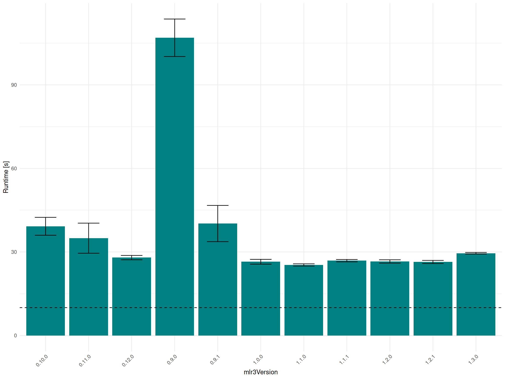
fselect() on 10 cores with models trained for 100 ms depending on the mlr3fselect version. The dashed line indicates the total training time of the models divided by 10. Error bars represent the median absolute deviation of the runtime.| mlr3fselect Version | bbotk Version | mlr3 Version | paradox Version | Model Time [ms] | Total Model Time [s] | Median Runtime [s] | Median Runtime Sequential [s] | Median Runtime 10,000 [s] | K | Median Memory [MB] | Median Memory 10,000 [s] |
|---|---|---|---|---|---|---|---|---|---|---|---|
| 0.10.0 | 0.7.2 | 0.14.1 | 0.11.0 | 100 | 100 | 39 | 130 | 44 | 3.9 | 1,802 | 2,248 |
| 0.11.0 | 0.7.2 | 0.14.1 | 0.11.0 | 100 | 100 | 35 | 140 | 52 | 3.5 | 1,792 | 2,253 |
| 0.12.0 | 0.8.0 | 0.19.0 | 0.11.1 | 100 | 100 | 28 | 120 | 26 | 2.8 | 1,782 | 2,263 |
| 0.9.0 | 0.7.2 | 0.14.1 | 0.11.0 | 100 | 100 | 110 | 270 | 78 | 11 | 4,337 | 4,680 |
| 0.9.1 | 0.7.2 | 0.14.1 | 0.11.0 | 100 | 100 | 40 | 130 | 45 | 4.0 | 1,751 | 2,335 |
| 1.0.0 | 1.0.0 | 0.20.0 | 1.0.1 | 100 | 100 | 26 | 120 | 26 | 2.6 | 1,751 | 2,202 |
| 1.1.0 | 1.1.0 | 0.20.2 | 1.0.1 | 100 | 100 | 25 | 120 | 26 | 2.5 | 1,761 | 2,273 |
| 1.1.1 | 1.1.1 | 0.21.0 | 1.0.1 | 100 | 100 | 27 | 120 | 27 | 2.7 | 1,792 | 2,284 |
| 1.2.0 | 1.2.0 | 0.21.1 | 1.0.1 | 100 | 100 | 27 | 120 | 27 | 2.7 | 1,802 | 2,304 |
| 1.2.1 | 1.3.0 | 0.21.1 | 1.0.1 | 100 | 100 | 26 | 120 | 28 | 2.6 | 1,807 | 2,304 |
| 1.3.0 | 1.5.0 | 0.21.1 | 1.0.1 | 100 | 100 | 30 | 120 | 29 | 3.0 | 1,802 | 2,304 |
Model Time 10 ms
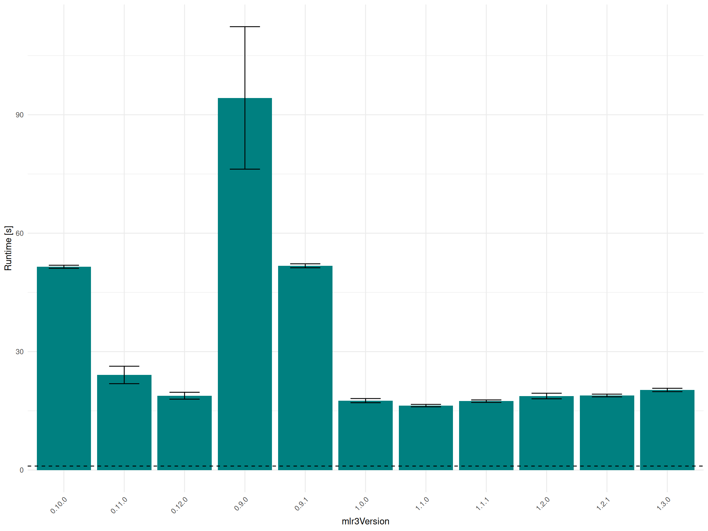
fselect() on 10 cores with models trained for 10 ms depending on the mlr3fselect version. The dashed line indicates the total training time of the models divided by 10. Error bars represent the median absolute deviation of the runtime.| mlr3fselect Version | bbotk Version | mlr3 Version | paradox Version | Model Time [ms] | Total Model Time [s] | Median Runtime [s] | Median Runtime Sequential [s] | Median Runtime 10,000 [s] | K | Median Memory [MB] | Median Memory 10,000 [s] |
|---|---|---|---|---|---|---|---|---|---|---|---|
| 0.10.0 | 0.7.2 | 0.14.1 | 0.11.0 | 10 | 10 | 51 | 36 | 29 | 51 | 1,802 | 2,248 |
| 0.11.0 | 0.7.2 | 0.14.1 | 0.11.0 | 10 | 10 | 24 | 43 | 21 | 24 | 1,792 | 2,253 |
| 0.12.0 | 0.8.0 | 0.19.0 | 0.11.1 | 10 | 10 | 19 | 26 | 18 | 19 | 1,782 | 2,263 |
| 0.9.0 | 0.7.2 | 0.14.1 | 0.11.0 | 10 | 10 | 94 | 160 | 96 | 94 | 4,337 | 4,680 |
| 0.9.1 | 0.7.2 | 0.14.1 | 0.11.0 | 10 | 10 | 52 | 62 | 35 | 52 | 1,751 | 2,335 |
| 1.0.0 | 1.0.0 | 0.20.0 | 1.0.1 | 10 | 10 | 18 | 26 | 18 | 18 | 1,751 | 2,202 |
| 1.1.0 | 1.1.0 | 0.20.2 | 1.0.1 | 10 | 10 | 16 | 25 | 16 | 16 | 1,761 | 2,273 |
| 1.1.1 | 1.1.1 | 0.21.0 | 1.0.1 | 10 | 10 | 17 | 27 | 17 | 17 | 1,792 | 2,284 |
| 1.2.0 | 1.2.0 | 0.21.1 | 1.0.1 | 10 | 10 | 19 | 27 | 19 | 19 | 1,802 | 2,304 |
| 1.2.1 | 1.3.0 | 0.21.1 | 1.0.1 | 10 | 10 | 19 | 27 | 18 | 19 | 1,807 | 2,304 |
| 1.3.0 | 1.5.0 | 0.21.1 | 1.0.1 | 10 | 10 | 20 | 27 | 20 | 20 | 1,802 | 2,304 |
Model Time 1 ms
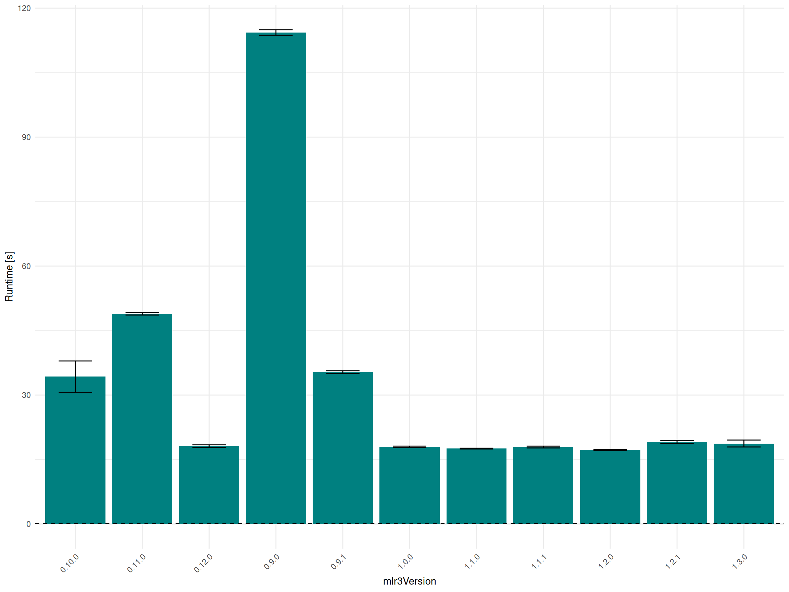
fselect() on 10 cores with models trained for 1 ms depending on the mlr3fselect version. The dashed line indicates the total training time of the models divided by 10. Error bars represent the median absolute deviation of the runtime.| mlr3fselect Version | bbotk Version | mlr3 Version | paradox Version | Model Time [ms] | Total Model Time [s] | Median Runtime [s] | Median Runtime Sequential [s] | Median Runtime 10,000 [s] | K | Median Memory [MB] | Median Memory 10,000 [s] |
|---|---|---|---|---|---|---|---|---|---|---|---|
| 0.10.0 | 0.7.2 | 0.14.1 | 0.11.0 | 1 | 1 | 34 | 40 | 41 | 340 | 1,802 | 2,248 |
| 0.11.0 | 0.7.2 | 0.14.1 | 0.11.0 | 1 | 1 | 49 | 48 | 39 | 490 | 1,792 | 2,253 |
| 0.12.0 | 0.8.0 | 0.19.0 | 0.11.1 | 1 | 1 | 18 | 18 | 18 | 180 | 1,782 | 2,263 |
| 0.9.0 | 0.7.2 | 0.14.1 | 0.11.0 | 1 | 1 | 110 | 130 | 120 | 1,100 | 4,337 | 4,680 |
| 0.9.1 | 0.7.2 | 0.14.1 | 0.11.0 | 1 | 1 | 35 | 40 | 48 | 350 | 1,751 | 2,335 |
| 1.0.0 | 1.0.0 | 0.20.0 | 1.0.1 | 1 | 1 | 18 | 17 | 18 | 180 | 1,751 | 2,202 |
| 1.1.0 | 1.1.0 | 0.20.2 | 1.0.1 | 1 | 1 | 18 | 17 | 17 | 180 | 1,761 | 2,273 |
| 1.1.1 | 1.1.1 | 0.21.0 | 1.0.1 | 1 | 1 | 18 | 18 | 17 | 180 | 1,792 | 2,284 |
| 1.2.0 | 1.2.0 | 0.21.1 | 1.0.1 | 1 | 1 | 17 | 19 | 18 | 170 | 1,802 | 2,304 |
| 1.2.1 | 1.3.0 | 0.21.1 | 1.0.1 | 1 | 1 | 19 | 18 | 17 | 190 | 1,807 | 2,304 |
| 1.3.0 | 1.5.0 | 0.21.1 | 1.0.1 | 1 | 1 | 19 | 18 | 20 | 190 | 1,802 | 2,304 |
Memory
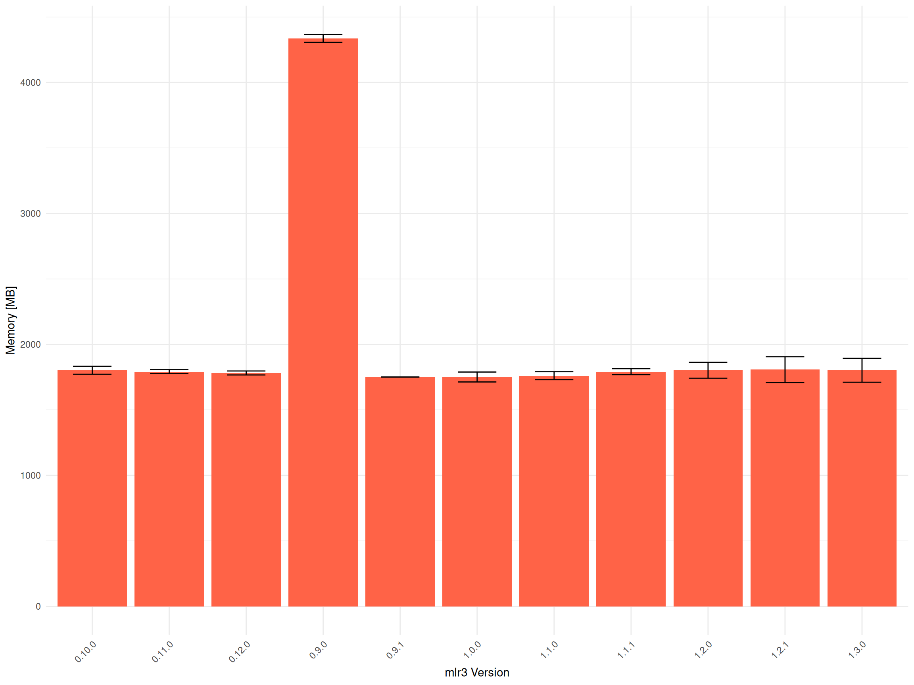
fselect() depending on the mlr3fselect version and the number of resampling iterations. Error bars represent the median absolute deviation of the memory usage.Nested Feature Selection
The runtime and memory usage of the fselect_nested() function is measured for different mlr3fselect versions. The outer resampling has 10 iterations and the inner random search evaluates 1000 feature subsets in total. The models are trained for different amounts of time (1 ms, 10 ms, 100 ms, and 1000 ms) on the spam dataset with 1000 and 10,000 instances.
task = tsk("spam")
learner = lrn("classif.sleep",
sleep_train = model_time / 2,
sleep_predict = model_time / 2)
fselect_nested(
fselector = fs("random_search", batch_size = 1000),
task = task,
learner = learner,
inner_resampling = rsmp("holdout"),
outer_resampling = rsmp("subsampling", repeats = 10),
measure = msr("classif.ce"),
terminator = trm("evals", n_evals = 1000),
store_fselect_instance = FALSE,
store_benchmark_result = FALSE,
store_models = FALSE
)Model Time 1000 ms

fselect_nested() with models trained for 1000 ms depending on the mlr3 version. The dashed line indicates the total training time of the models. Error bars represent the median absolute deviation of the runtime.| mlr3fselect Version | bbotk Version | mlr3 Version | paradox Version | Model Time [ms] | Total Model Time [s] | Median Runtime [s] | Median Runtime 10,000 [s] | K | Median Memory [MB] | Median Memory 10,000 [s] |
|---|---|---|---|---|---|---|---|---|---|---|
| 0.10.0 | 0.7.2 | 0.14.1 | 0.11.0 | 1000 | 10000 | 10,000 | 10,000 | 1.0 | 490 | 584 |
| 0.11.0 | 0.7.2 | 0.14.1 | 0.11.0 | 1000 | 10000 | 10,000 | 10,000 | 1.0 | 489 | 587 |
| 0.12.0 | 0.8.0 | 0.19.0 | 0.11.1 | 1000 | 10000 | 10,000 | 10,000 | 1.0 | 523 | 513 |
| 0.9.0 | 0.7.2 | 0.14.1 | 0.11.0 | 1000 | 10000 | 11,000 | 11,000 | 1.1 | 1,096 | 1,096 |
| 0.9.1 | 0.7.2 | 0.14.1 | 0.11.0 | 1000 | 10000 | 10,000 | 10,000 | 1.0 | 531 | 595 |
| 1.0.0 | 1.0.0 | 0.20.0 | 1.0.1 | 1000 | 10000 | 10,000 | 10,000 | 1.0 | 582 | 509 |
| 1.1.0 | 1.1.0 | 0.20.2 | 1.0.1 | 1000 | 10000 | 10,000 | 10,000 | 1.0 | 521 | 509 |
| 1.1.1 | 1.1.1 | 0.21.0 | 1.0.1 | 1000 | 10000 | 10,000 | 10,000 | 1.0 | 512 | 628 |
| 1.2.0 | 1.2.0 | 0.21.1 | 1.0.1 | 1000 | 10000 | 10,000 | 10,000 | 1.0 | 521 | 531 |
| 1.2.1 | 1.3.0 | 0.21.1 | 1.0.1 | 1000 | 10000 | 10,000 | 10,000 | 1.0 | 526 | 530 |
| 1.3.0 | 1.5.0 | 0.21.1 | 1.0.1 | 1000 | 10000 | 10,000 | 10,000 | 1.0 | 537 | 523 |
Model Time 100 ms
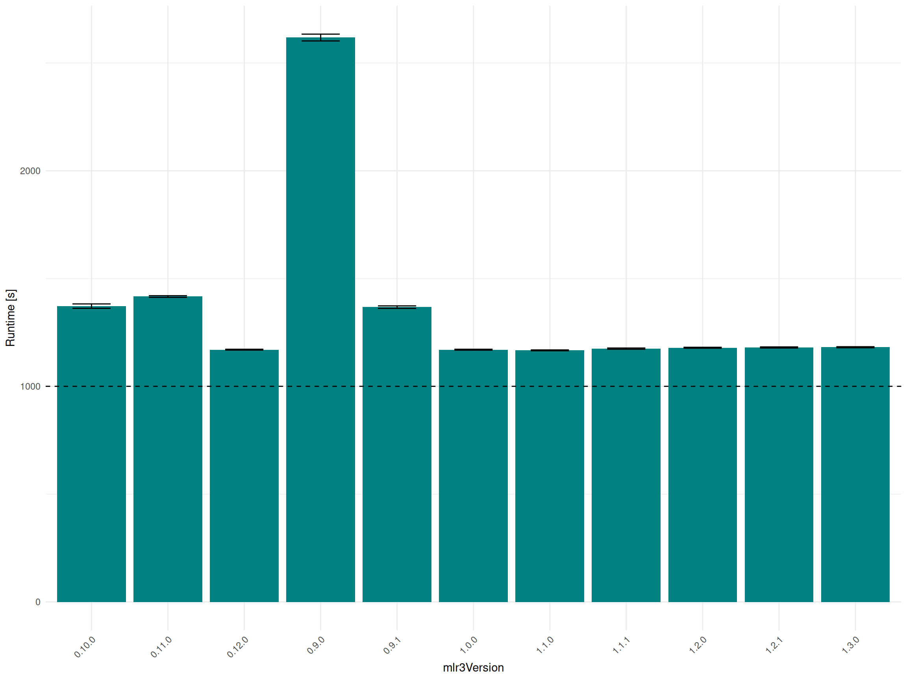
fselect_nested() with models trained for 100 ms depending on the mlr3 version. The dashed line indicates the total training time of the models. Error bars represent the median absolute deviation of the runtime.| mlr3fselect Version | bbotk Version | mlr3 Version | paradox Version | Model Time [ms] | Total Model Time [s] | Median Runtime [s] | Median Runtime 10,000 [s] | K | Median Memory [MB] | Median Memory 10,000 [s] |
|---|---|---|---|---|---|---|---|---|---|---|
| 0.10.0 | 0.7.2 | 0.14.1 | 0.11.0 | 100 | 1000 | 1,400 | 1,400 | 1.4 | 490 | 584 |
| 0.11.0 | 0.7.2 | 0.14.1 | 0.11.0 | 100 | 1000 | 1,400 | 1,500 | 1.4 | 489 | 587 |
| 0.12.0 | 0.8.0 | 0.19.0 | 0.11.1 | 100 | 1000 | 1,200 | 1,200 | 1.2 | 523 | 513 |
| 0.9.0 | 0.7.2 | 0.14.1 | 0.11.0 | 100 | 1000 | 2,600 | 2,400 | 2.6 | 1,096 | 1,096 |
| 0.9.1 | 0.7.2 | 0.14.1 | 0.11.0 | 100 | 1000 | 1,400 | 1,300 | 1.4 | 531 | 595 |
| 1.0.0 | 1.0.0 | 0.20.0 | 1.0.1 | 100 | 1000 | 1,200 | 1,200 | 1.2 | 582 | 509 |
| 1.1.0 | 1.1.0 | 0.20.2 | 1.0.1 | 100 | 1000 | 1,200 | 1,200 | 1.2 | 521 | 509 |
| 1.1.1 | 1.1.1 | 0.21.0 | 1.0.1 | 100 | 1000 | 1,200 | 1,200 | 1.2 | 512 | 628 |
| 1.2.0 | 1.2.0 | 0.21.1 | 1.0.1 | 100 | 1000 | 1,200 | 1,200 | 1.2 | 521 | 531 |
| 1.2.1 | 1.3.0 | 0.21.1 | 1.0.1 | 100 | 1000 | 1,200 | 1,200 | 1.2 | 526 | 530 |
| 1.3.0 | 1.5.0 | 0.21.1 | 1.0.1 | 100 | 1000 | 1,200 | 1,200 | 1.2 | 537 | 523 |
Model Time 10 ms
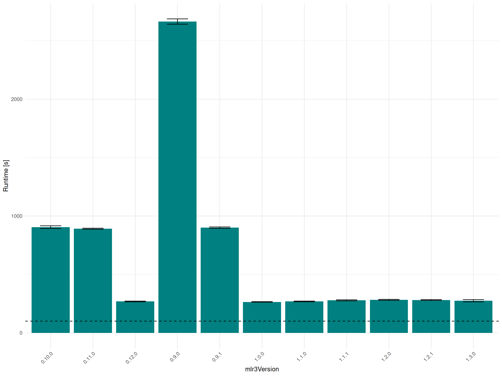
fselect_nested() with models trained for 10 ms depending on the mlr3 version. The dashed line indicates the total training time of the models. Error bars represent the median absolute deviation of the runtime.| mlr3fselect Version | bbotk Version | mlr3 Version | paradox Version | Model Time [ms] | Total Model Time [s] | Median Runtime [s] | Median Runtime 10,000 [s] | K | Median Memory [MB] | Median Memory 10,000 [s] |
|---|---|---|---|---|---|---|---|---|---|---|
| 0.10.0 | 0.7.2 | 0.14.1 | 0.11.0 | 10 | 100 | 900 | 1,900 | 9.0 | 490 | 584 |
| 0.11.0 | 0.7.2 | 0.14.1 | 0.11.0 | 10 | 100 | 890 | 1,500 | 8.9 | 489 | 587 |
| 0.12.0 | 0.8.0 | 0.19.0 | 0.11.1 | 10 | 100 | 270 | 280 | 2.7 | 523 | 513 |
| 0.9.0 | 0.7.2 | 0.14.1 | 0.11.0 | 10 | 100 | 2,700 | 3,400 | 27 | 1,096 | 1,096 |
| 0.9.1 | 0.7.2 | 0.14.1 | 0.11.0 | 10 | 100 | 900 | 1,600 | 9.0 | 531 | 595 |
| 1.0.0 | 1.0.0 | 0.20.0 | 1.0.1 | 10 | 100 | 260 | 270 | 2.6 | 582 | 509 |
| 1.1.0 | 1.1.0 | 0.20.2 | 1.0.1 | 10 | 100 | 270 | 280 | 2.7 | 521 | 509 |
| 1.1.1 | 1.1.1 | 0.21.0 | 1.0.1 | 10 | 100 | 280 | 290 | 2.8 | 512 | 628 |
| 1.2.0 | 1.2.0 | 0.21.1 | 1.0.1 | 10 | 100 | 280 | 300 | 2.8 | 521 | 531 |
| 1.2.1 | 1.3.0 | 0.21.1 | 1.0.1 | 10 | 100 | 280 | 300 | 2.8 | 526 | 530 |
| 1.3.0 | 1.5.0 | 0.21.1 | 1.0.1 | 10 | 100 | 270 | 290 | 2.7 | 537 | 523 |
Model Time 1 ms
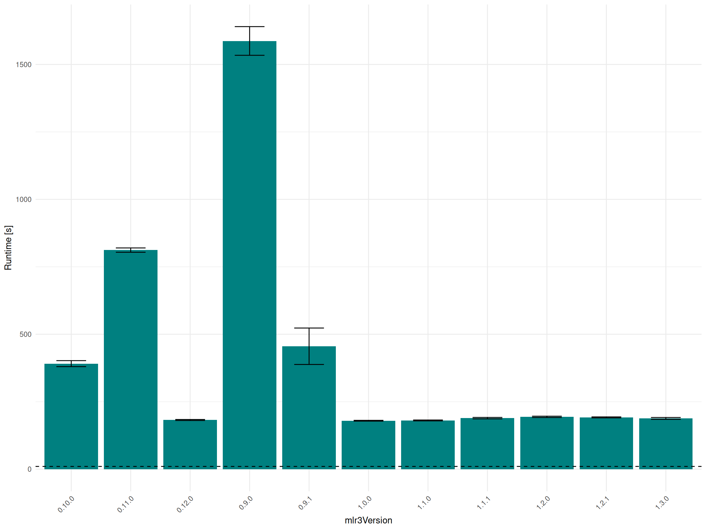
fselect_nested() with models trained for 1 ms depending on the mlr3 version. The dashed line indicates the total training time of the models. Error bars represent the median absolute deviation of the runtime.| mlr3fselect Version | bbotk Version | mlr3 Version | paradox Version | Model Time [ms] | Total Model Time [s] | Median Runtime [s] | Median Runtime 10,000 [s] | K | Median Memory [MB] | Median Memory 10,000 [s] |
|---|---|---|---|---|---|---|---|---|---|---|
| 0.10.0 | 0.7.2 | 0.14.1 | 0.11.0 | 1 | 10 | 390 | 1,800 | 39 | 490 | 584 |
| 0.11.0 | 0.7.2 | 0.14.1 | 0.11.0 | 1 | 10 | 810 | 720 | 81 | 489 | 587 |
| 0.12.0 | 0.8.0 | 0.19.0 | 0.11.1 | 1 | 10 | 180 | 200 | 18 | 523 | 513 |
| 0.9.0 | 0.7.2 | 0.14.1 | 0.11.0 | 1 | 10 | 1,600 | 3,300 | 160 | 1,096 | 1,096 |
| 0.9.1 | 0.7.2 | 0.14.1 | 0.11.0 | 1 | 10 | 460 | 1,500 | 46 | 531 | 595 |
| 1.0.0 | 1.0.0 | 0.20.0 | 1.0.1 | 1 | 10 | 180 | 190 | 18 | 582 | 509 |
| 1.1.0 | 1.1.0 | 0.20.2 | 1.0.1 | 1 | 10 | 180 | 190 | 18 | 521 | 509 |
| 1.1.1 | 1.1.1 | 0.21.0 | 1.0.1 | 1 | 10 | 190 | 200 | 19 | 512 | 628 |
| 1.2.0 | 1.2.0 | 0.21.1 | 1.0.1 | 1 | 10 | 190 | 210 | 19 | 521 | 531 |
| 1.2.1 | 1.3.0 | 0.21.1 | 1.0.1 | 1 | 10 | 190 | 210 | 19 | 526 | 530 |
| 1.3.0 | 1.5.0 | 0.21.1 | 1.0.1 | 1 | 10 | 190 | 200 | 19 | 537 | 523 |
Memory
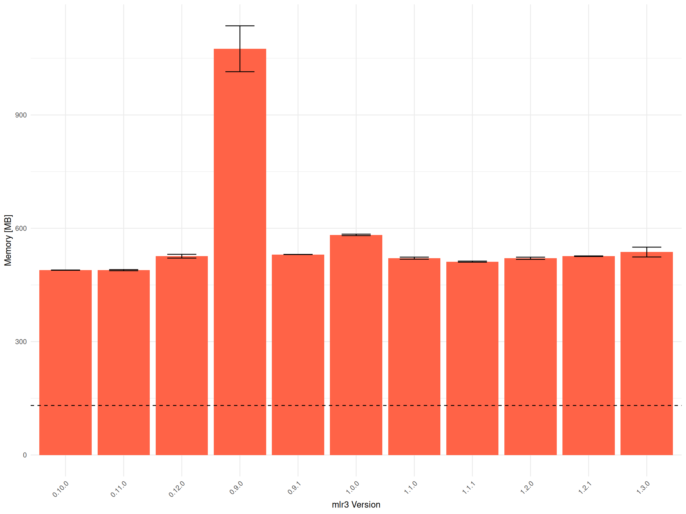
fselect() depending on the mlr3fselect version and the number of resampling iterations. Error bars represent the median absolute deviation of the memory usage. The dashed line indicates the memory usage of an empty R session which is 131 MB.Nested Feature Selection in Parallel
The runtime and memory usage of the fselect_nested() function is measured for different mlr3fselect versions. The outer resampling has 10 iterations and the inner random search evaluates 1000 feature subsets in total. The outer resampling is run in parallel on 10 cores with future::multisession. The models are trained for different amounts of time (1 ms, 10 ms, 100 ms, and 1000 ms) on the spam dataset with 1000 and 10,000 instances.
task = tsk("spam")
learner = lrn("classif.sleep",
sleep_train = model_time / 2,
sleep_predict = model_time / 2)
future::plan("multisession", workers = 10)
fselect_nested(
fselector = fs("random_search", batch_size = 1000),
task = task,
learner = learner,
inner_resampling = rsmp("holdout"),
outer_resampling = rsmp("subsampling", repeats = 10),
measure = msr("classif.ce"),
terminator = trm("evals", n_evals = 1000),
store_fselect_instance = FALSE,
store_benchmark_result = FALSE,
store_models = FALSE
)Model Time 1000 ms
fselect_nested() on 10 cores with models trained for 1000 ms depending on the mlr3 version. The dashed line indicates the total training time of the models. Error bars represent the median absolute deviation of the runtime.| mlr3fselect Version | bbotk Version | mlr3 Version | paradox Version | Model Time [ms] | Total Model Time [s] | Median Runtime [s] | Median Runtime Sequential [s] | Median Runtime 10,000 [s] | K | Median Memory [MB] | Median Memory 10,000 [s] |
|---|---|---|---|---|---|---|---|---|---|---|---|
| 0.10.0 | 0.7.2 | 0.14.1 | 0.11.0 | 1000 | 10000 | 1,000 | 10,000 | 1,000 | 1.0 | 4,178 | 5,693 |
| 0.11.0 | 0.7.2 | 0.14.1 | 0.11.0 | 1000 | 10000 | 1,000 | 10,000 | 1,000 | 1.0 | 4,168 | 5,652 |
| 0.12.0 | 0.8.0 | 0.19.0 | 0.11.1 | 1000 | 10000 | 1,000 | 10,000 | 1,000 | 1.0 | 3,318 | 4,301 |
| 0.9.0 | 0.7.2 | 0.14.1 | 0.11.0 | 1000 | 10000 | 1,300 | 11,000 | 1,300 | 1.3 | 8,417 | 9,124 |
| 0.9.1 | 0.7.2 | 0.14.1 | 0.11.0 | 1000 | 10000 | 1,000 | 10,000 | 1,000 | 1.0 | 4,762 | 5,396 |
| 1.0.0 | 1.0.0 | 0.20.0 | 1.0.1 | 1000 | 10000 | 1,000 | 10,000 | 1,000 | 1.0 | 3,205 | 4,332 |
| 1.1.0 | 1.1.0 | 0.20.2 | 1.0.1 | 1000 | 10000 | 1,000 | 10,000 | 1,000 | 1.0 | 3,226 | 4,311 |
| 1.1.1 | 1.1.1 | 0.21.0 | 1.0.1 | 1000 | 10000 | 1,000 | 10,000 | 1,000 | 1.0 | 3,267 | 4,618 |
| 1.2.0 | 1.2.0 | 0.21.1 | 1.0.1 | 1000 | 10000 | 1,000 | 10,000 | 1,000 | 1.0 | 3,308 | 4,419 |
| 1.2.1 | 1.3.0 | 0.21.1 | 1.0.1 | 1000 | 10000 | 1,000 | 10,000 | 1,000 | 1.0 | 3,308 | 4,342 |
| 1.3.0 | 1.5.0 | 0.21.1 | 1.0.1 | 1000 | 10000 | 1,000 | 10,000 | 1,000 | 1.0 | 3,318 | 4,444 |
Model Time 100 ms
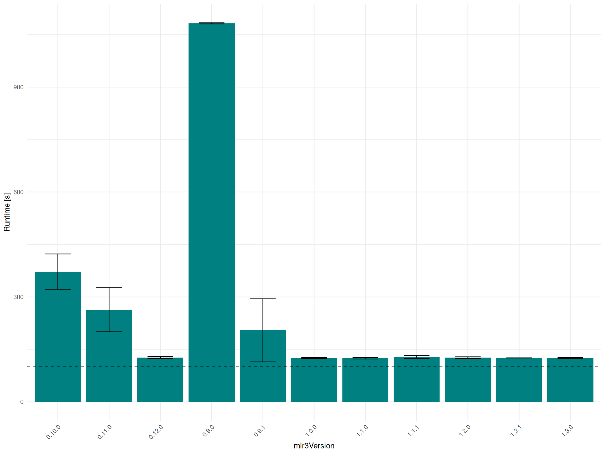
fselect_nested() on 10 cores with models trained for 100 ms depending on the mlr3 version. The dashed line indicates the total training time of the models. Error bars represent the median absolute deviation of the runtime.| mlr3fselect Version | bbotk Version | mlr3 Version | paradox Version | Model Time [ms] | Total Model Time [s] | Median Runtime [s] | Median Runtime Sequential [s] | Median Runtime 10,000 [s] | K | Median Memory [MB] | Median Memory 10,000 [s] |
|---|---|---|---|---|---|---|---|---|---|---|---|
| 0.10.0 | 0.7.2 | 0.14.1 | 0.11.0 | 100 | 1000 | 370 | 1,400 | 230 | 3.7 | 4,178 | 5,693 |
| 0.11.0 | 0.7.2 | 0.14.1 | 0.11.0 | 100 | 1000 | 260 | 1,400 | 220 | 2.6 | 4,168 | 5,652 |
| 0.12.0 | 0.8.0 | 0.19.0 | 0.11.1 | 100 | 1000 | 130 | 1,200 | 130 | 1.3 | 3,318 | 4,301 |
| 0.9.0 | 0.7.2 | 0.14.1 | 0.11.0 | 100 | 1000 | 1,100 | 2,600 | 580 | 11 | 8,417 | 9,124 |
| 0.9.1 | 0.7.2 | 0.14.1 | 0.11.0 | 100 | 1000 | 200 | 1,400 | 230 | 2.0 | 4,762 | 5,396 |
| 1.0.0 | 1.0.0 | 0.20.0 | 1.0.1 | 100 | 1000 | 130 | 1,200 | 130 | 1.3 | 3,205 | 4,332 |
| 1.1.0 | 1.1.0 | 0.20.2 | 1.0.1 | 100 | 1000 | 120 | 1,200 | 130 | 1.2 | 3,226 | 4,311 |
| 1.1.1 | 1.1.1 | 0.21.0 | 1.0.1 | 100 | 1000 | 130 | 1,200 | 130 | 1.3 | 3,267 | 4,618 |
| 1.2.0 | 1.2.0 | 0.21.1 | 1.0.1 | 100 | 1000 | 130 | 1,200 | 130 | 1.3 | 3,308 | 4,419 |
| 1.2.1 | 1.3.0 | 0.21.1 | 1.0.1 | 100 | 1000 | 130 | 1,200 | 130 | 1.3 | 3,308 | 4,342 |
| 1.3.0 | 1.5.0 | 0.21.1 | 1.0.1 | 100 | 1000 | 130 | 1,200 | 130 | 1.3 | 3,318 | 4,444 |
Model Time 10 ms
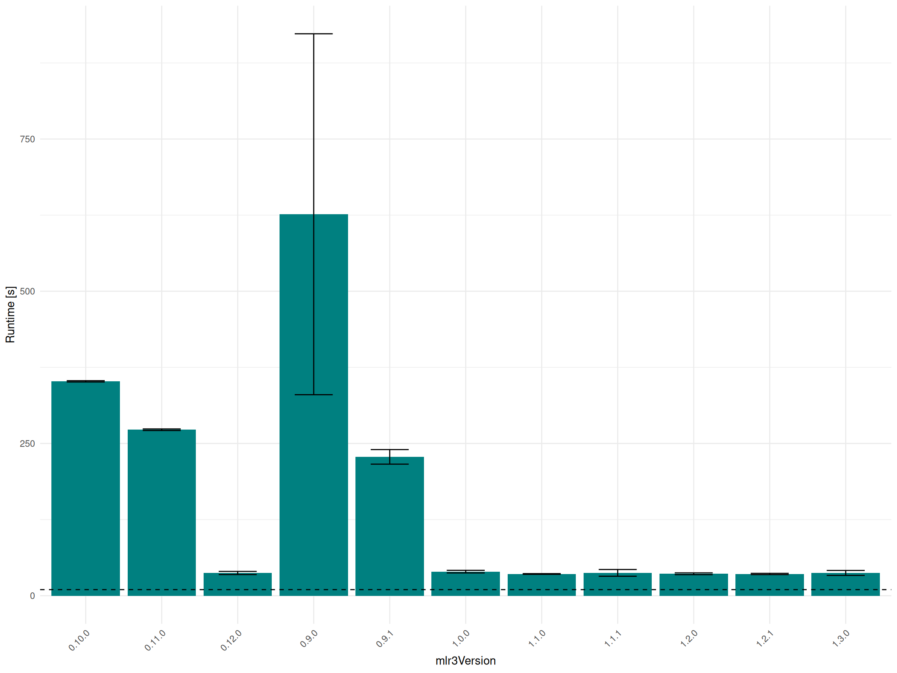
fselect_nested() on 10 cores with models trained for 10 ms depending on the mlr3 version. The dashed line indicates the total training time of the models. Error bars represent the median absolute deviation of the runtime.| mlr3fselect Version | bbotk Version | mlr3 Version | paradox Version | Model Time [ms] | Total Model Time [s] | Median Runtime [s] | Median Runtime Sequential [s] | Median Runtime 10,000 [s] | K | Median Memory [MB] | Median Memory 10,000 [s] |
|---|---|---|---|---|---|---|---|---|---|---|---|
| 0.10.0 | 0.7.2 | 0.14.1 | 0.11.0 | 10 | 100 | 350 | 900 | 300 | 35 | 4,178 | 5,693 |
| 0.11.0 | 0.7.2 | 0.14.1 | 0.11.0 | 10 | 100 | 270 | 890 | 340 | 27 | 4,168 | 5,652 |
| 0.12.0 | 0.8.0 | 0.19.0 | 0.11.1 | 10 | 100 | 37 | 270 | 38 | 3.7 | 3,318 | 4,301 |
| 0.9.0 | 0.7.2 | 0.14.1 | 0.11.0 | 10 | 100 | 630 | 2,700 | 1,200 | 63 | 8,417 | 9,124 |
| 0.9.1 | 0.7.2 | 0.14.1 | 0.11.0 | 10 | 100 | 230 | 900 | 180 | 23 | 4,762 | 5,396 |
| 1.0.0 | 1.0.0 | 0.20.0 | 1.0.1 | 10 | 100 | 40 | 260 | 37 | 4.0 | 3,205 | 4,332 |
| 1.1.0 | 1.1.0 | 0.20.2 | 1.0.1 | 10 | 100 | 36 | 270 | 35 | 3.6 | 3,226 | 4,311 |
| 1.1.1 | 1.1.1 | 0.21.0 | 1.0.1 | 10 | 100 | 38 | 280 | 38 | 3.8 | 3,267 | 4,618 |
| 1.2.0 | 1.2.0 | 0.21.1 | 1.0.1 | 10 | 100 | 36 | 280 | 36 | 3.6 | 3,308 | 4,419 |
| 1.2.1 | 1.3.0 | 0.21.1 | 1.0.1 | 10 | 100 | 36 | 280 | 35 | 3.6 | 3,308 | 4,342 |
| 1.3.0 | 1.5.0 | 0.21.1 | 1.0.1 | 10 | 100 | 37 | 270 | 38 | 3.7 | 3,318 | 4,444 |
Model Time 1 ms
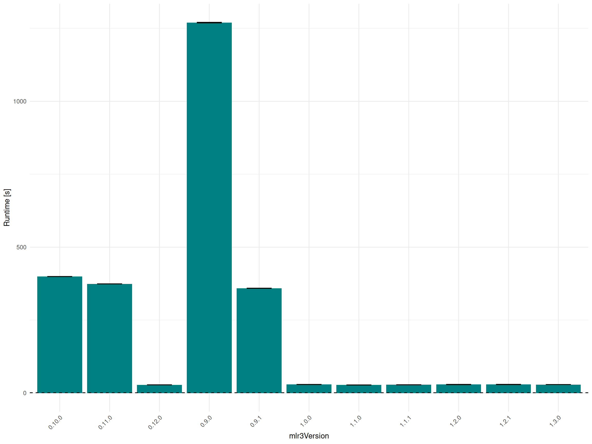
fselect_nested() on 10 cores with models trained for 1 ms depending on the mlr3 version. The dashed line indicates the total training time of the models. Error bars represent the median absolute deviation of the runtime.| mlr3fselect Version | bbotk Version | mlr3 Version | paradox Version | Model Time [ms] | Total Model Time [s] | Median Runtime [s] | Median Runtime Sequential [s] | Median Runtime 10,000 [s] | K | Median Memory [MB] | Median Memory 10,000 [s] |
|---|---|---|---|---|---|---|---|---|---|---|---|
| 0.10.0 | 0.7.2 | 0.14.1 | 0.11.0 | 1 | 10 | 400 | 390 | 260 | 400 | 4,178 | 5,693 |
| 0.11.0 | 0.7.2 | 0.14.1 | 0.11.0 | 1 | 10 | 370 | 810 | 360 | 370 | 4,168 | 5,652 |
| 0.12.0 | 0.8.0 | 0.19.0 | 0.11.1 | 1 | 10 | 28 | 180 | 29 | 28 | 3,318 | 4,301 |
| 0.9.0 | 0.7.2 | 0.14.1 | 0.11.0 | 1 | 10 | 1,300 | 1,600 | 1,300 | 1,300 | 8,417 | 9,124 |
| 0.9.1 | 0.7.2 | 0.14.1 | 0.11.0 | 1 | 10 | 360 | 460 | 280 | 360 | 4,762 | 5,396 |
| 1.0.0 | 1.0.0 | 0.20.0 | 1.0.1 | 1 | 10 | 29 | 180 | 28 | 29 | 3,205 | 4,332 |
| 1.1.0 | 1.1.0 | 0.20.2 | 1.0.1 | 1 | 10 | 28 | 180 | 36 | 28 | 3,226 | 4,311 |
| 1.1.1 | 1.1.1 | 0.21.0 | 1.0.1 | 1 | 10 | 28 | 190 | 29 | 28 | 3,267 | 4,618 |
| 1.2.0 | 1.2.0 | 0.21.1 | 1.0.1 | 1 | 10 | 29 | 190 | 29 | 29 | 3,308 | 4,419 |
| 1.2.1 | 1.3.0 | 0.21.1 | 1.0.1 | 1 | 10 | 29 | 190 | 30 | 29 | 3,308 | 4,342 |
| 1.3.0 | 1.5.0 | 0.21.1 | 1.0.1 | 1 | 10 | 29 | 190 | 30 | 29 | 3,318 | 4,444 |
Memory
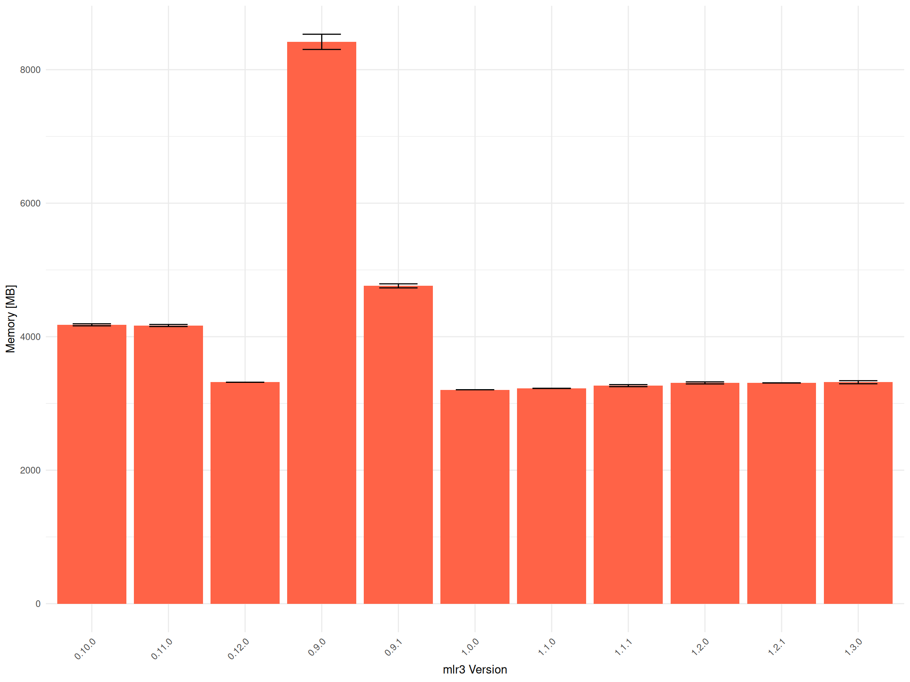
fselect() depending on the mlr3fselect version and the number of resampling iterations. Error bars represent the median absolute deviation of the memory usage.